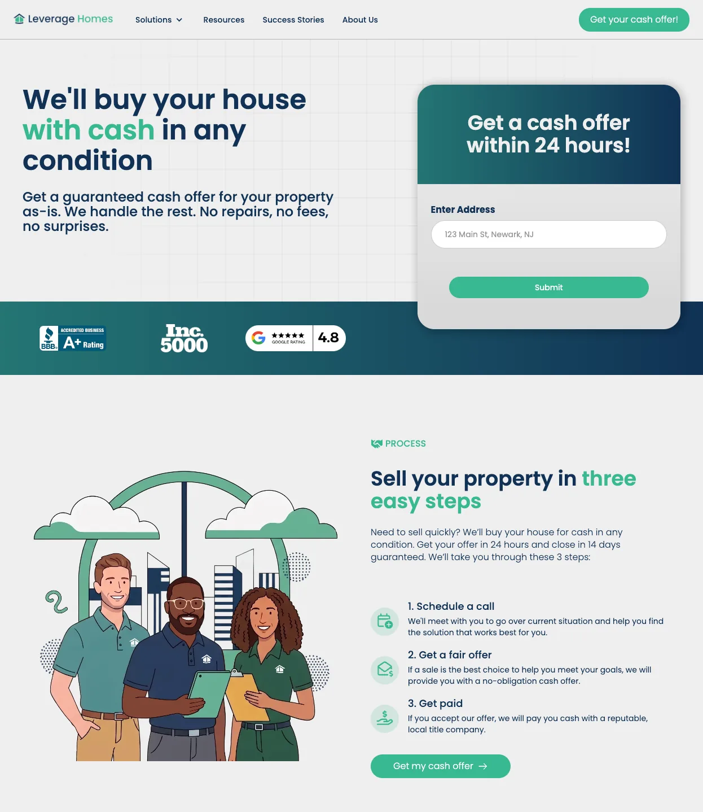
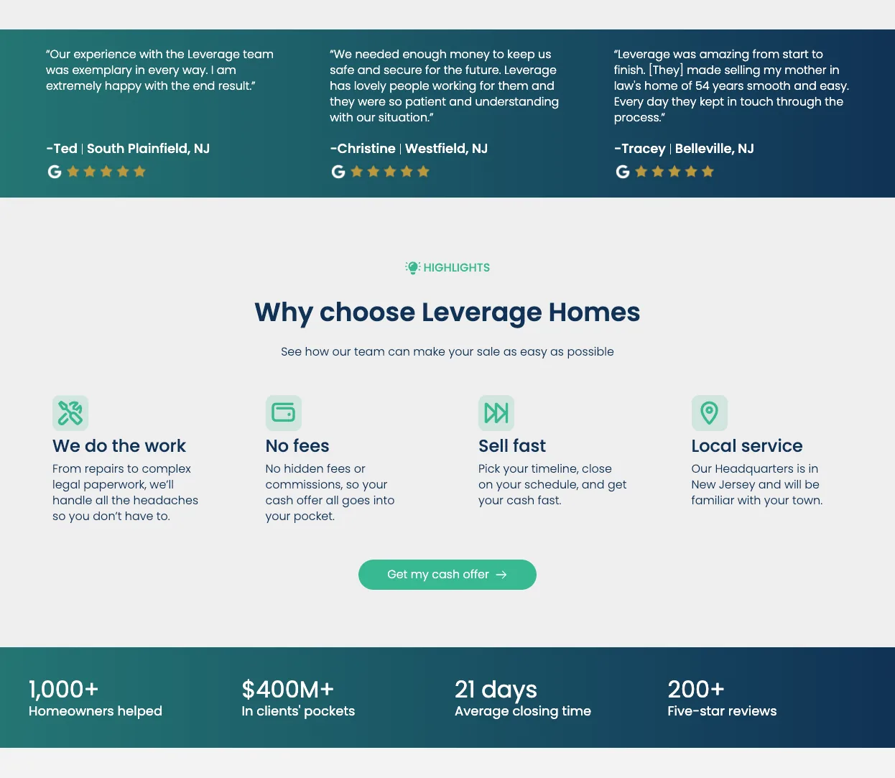
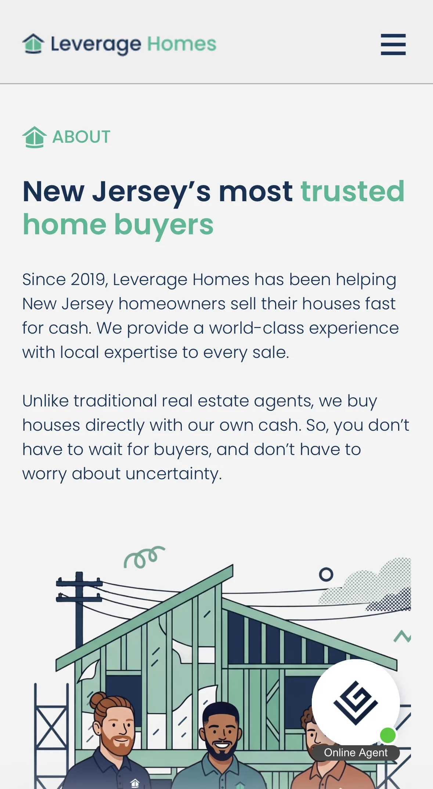
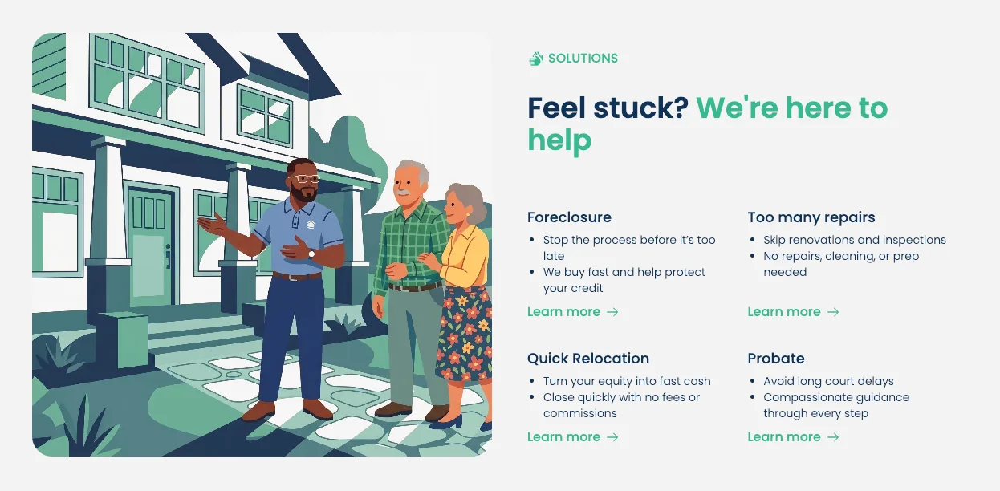
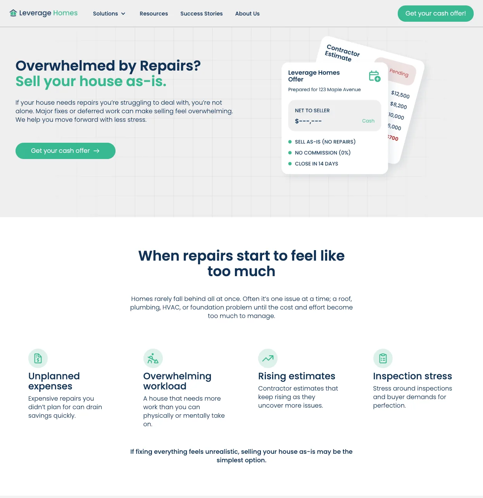
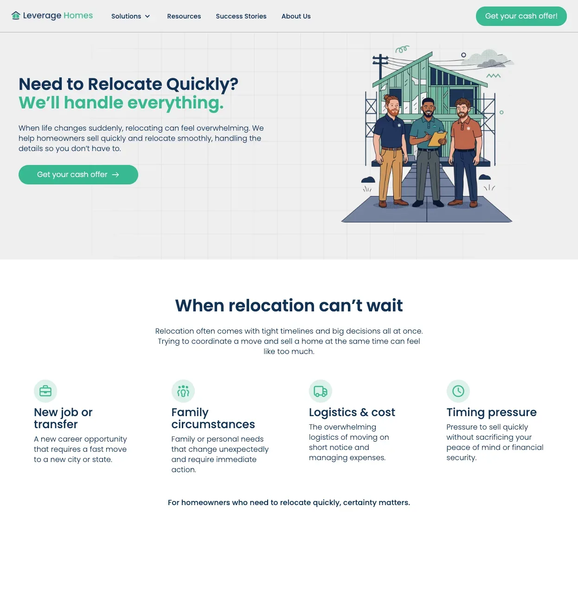
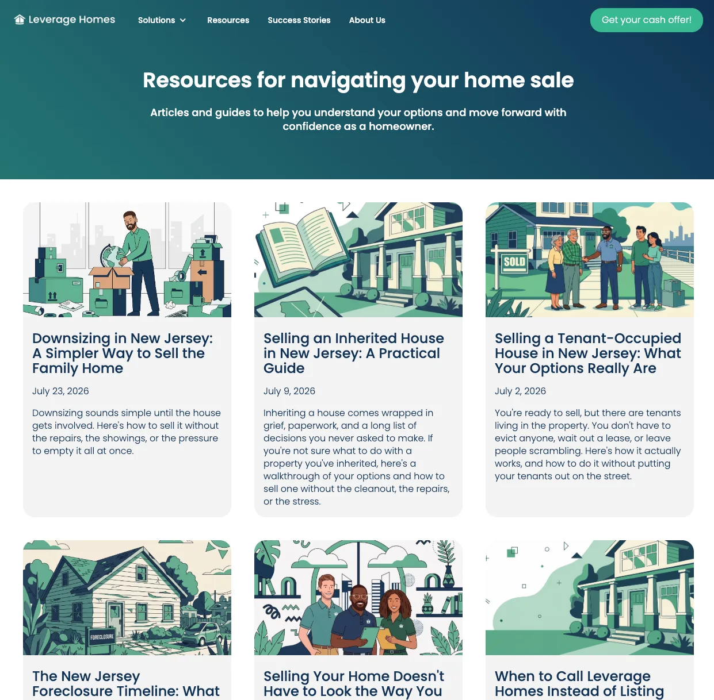
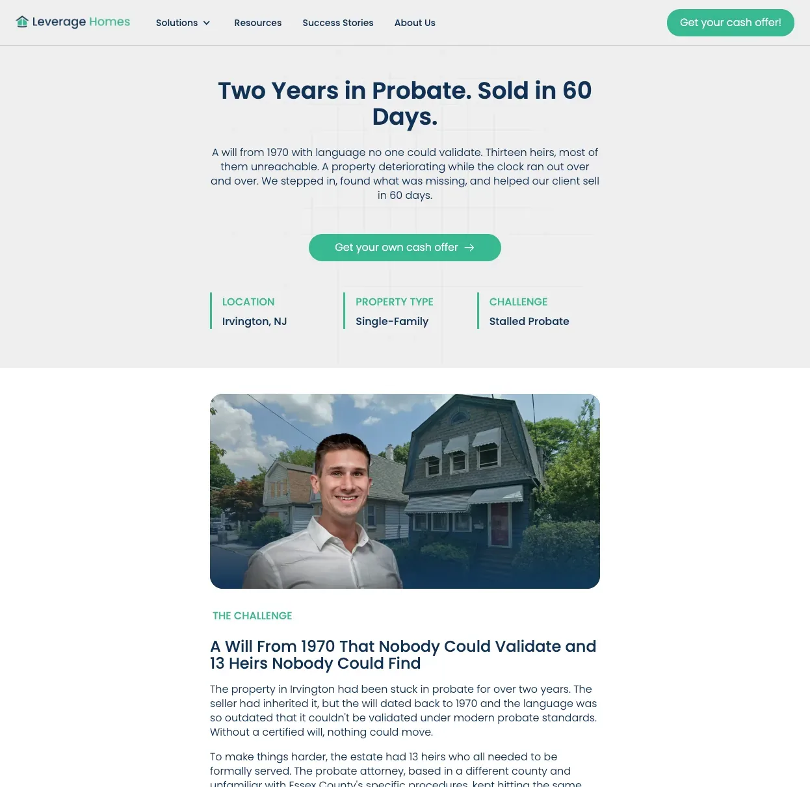
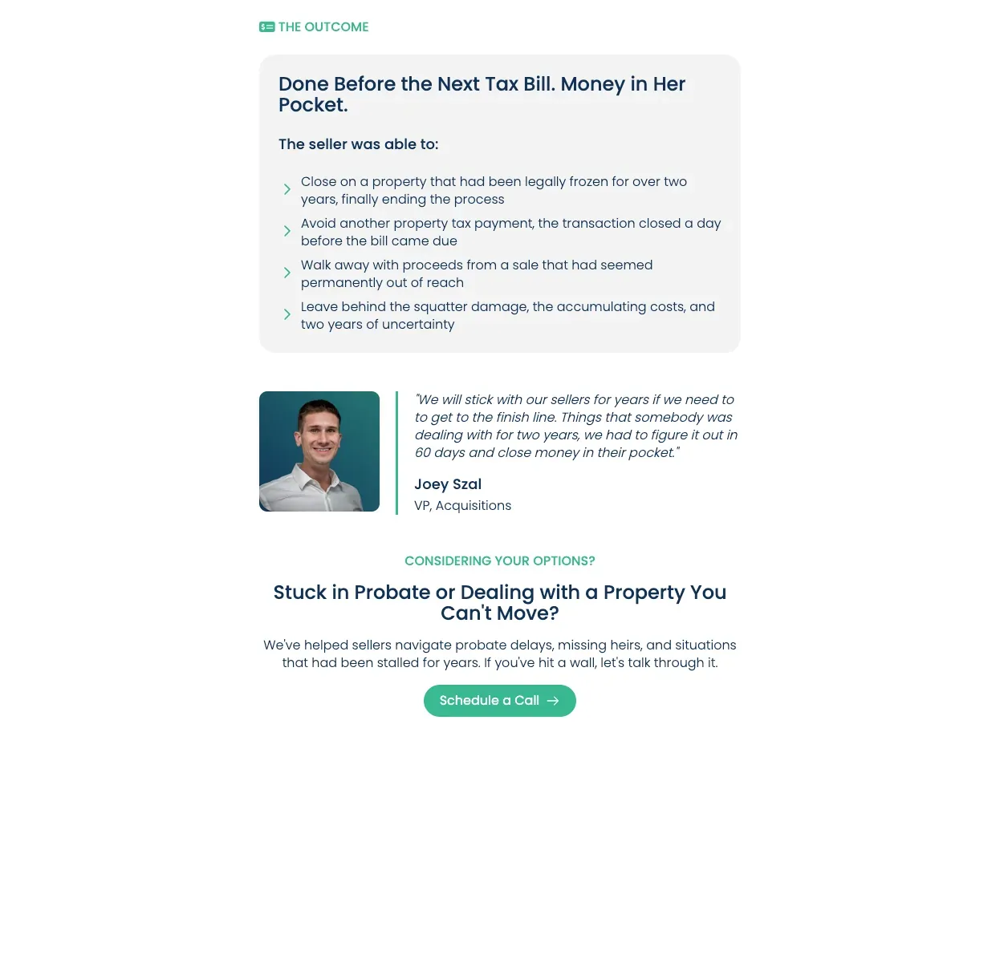
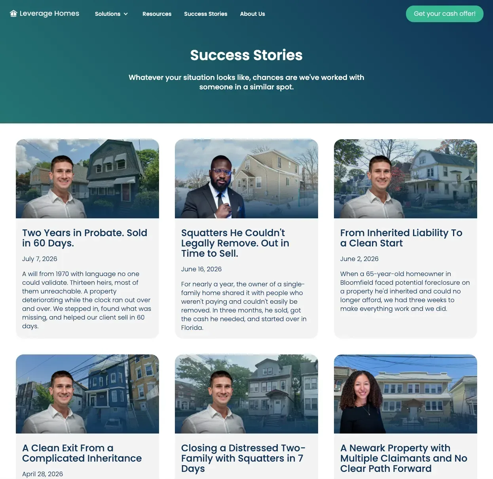

<!--
  Leverage Homes / Case Study Page
  Rebuilt to match the LIVE portfolio homepage usage:
  - Heavy Inter for the big identity type; Playfair for expressive statements + card/section titles.
  - LH is the WARM brand, so this page uses light containers (obsidian is reserved for the BCC case study).
  - Client-First-style class names for an easy native Webflow rebuild.
  - Media areas are light placeholder frames / swap .shot blocks for real .
-->
<meta charset="utf-8">
<meta name="viewport" content="width=device-width, initial-scale=1">
<title>Leverage Homes / Case Study</title>
<link rel="preconnect" href="https://fonts.googleapis.com">
<link rel="preconnect" href="https://fonts.gstatic.com" crossorigin>
<link href="https://fonts.googleapis.com/css2?family=Playfair+Display:wght@500;600;700&family=Inter:wght@400;600;800&family=Poppins:wght@500;600&display=swap" rel="stylesheet">

<style>
  :root {
    --canvas: #F5F2EE;
    --ink: #141414;
    --slate: #5D737E;
    --olive: #707A5E;
    --warm-gray: #8D8D8D;
    --link-hover: #51656F;   /* slate, darkened to clear AA on canvas and field */
    --obsidian: #1A1A1A;
    --field: #EBE8E4;        /* light media container */
    --field-deep: #E5E2DE;
    --hairline: #D8D3CB;
    --muted: #4C4A47;        /* muted text on light */
    --on-dark: #F5F2EE;
    --on-dark-muted: rgba(245,242,238,0.72);
    --on-dark-line: rgba(245,242,238,0.18);

    --container-max: 1200px;
    --gutter: 32px;
    --section-pad: 80px;
    --stack-sm: 8px;
    --stack-md: 16px;
    --stack-lg: 48px;
  }

  * { box-sizing: border-box; }
  /* The nav is fixed at 68px, and nothing offset the anchor targets, so every in-page jump
     (#work, #about, #contact, and the case-study nav links back to index.html#work) landed
     the target flush at the viewport top, underneath the nav. scroll-padding-top on the
     scroll container fixes all of them at once; per-element scroll-margin would need adding
     to every new anchor. 88px is the nav plus 20px of air. */
  html { scroll-behavior: smooth; scroll-padding-top: 88px; }
  body {
    margin: 0; background: var(--canvas); color: var(--ink);
    font-family: "Inter", sans-serif; -webkit-font-smoothing: antialiased;
    font-size: 16px; line-height: 26px;
  }
  img { display: block; max-width: 100%; }

  /* Layout containers (Client-First flavored) */
  .padding-global { padding-left: var(--gutter); padding-right: var(--gutter); }
  .container-large { max-width: var(--container-max); margin: 0 auto; width: 100%; }
  .section { padding-top: var(--section-pad); padding-bottom: var(--section-pad); }

  /* Type scale */
  .display-name {
    font-family: "Inter", sans-serif; font-weight: 800;
    font-size: 80px; line-height: 0.98; letter-spacing: -0.02em;
    text-transform: uppercase; margin: 0;
  }
  .statement {
    font-family: "Playfair Display", serif; font-weight: 600;
    font-size: 44px; line-height: 52px; margin: 0;
  }
  /* HEADLINES ARE SANS. Playfair stays for the display and editorial moments — the 44px hero
     statement, pull quotes, stat numbers — but not for headlines, which are full sentences a
     reader actually reads. Ryan: "it's just hard to read actual content with this font".
     The tell was that .headline-lg is stepped DOWN to 36px inside a two-column row, i.e.
     Playfair used below the size a Didone wants, for layout reasons. Inter 600 with -0.02em
     tracking reads instantly and sits in a clear hierarchy under the Playfair statement. */
  .headline-lg { font-family: "Inter", sans-serif; font-weight: 600; font-size: 44px; line-height: 54px; letter-spacing: -0.02em; margin: 0; }
  .headline-md { font-family: "Inter", sans-serif; font-weight: 600; font-size: 30px; line-height: 40px; letter-spacing: -0.02em; margin: 0; }
  /* .card-title was declared here but never used on this page — no element carries the class.
     Removed so the Playfair inventory matches what actually renders. */
  .body-lg { font-size: 20px; line-height: 32px; }
  .body-md { font-size: 16px; line-height: 26px; }
  .ui-label { font-size: 12px; line-height: 16px; font-weight: 600; letter-spacing: 0.1em; text-transform: uppercase; }
  .caption { font-size: 14px; line-height: 20px; color: var(--warm-gray); }
  .measure { max-width: 62ch; }
  .section--flush-top { padding-top: 0; }
  .eyebrow-muted { color: var(--warm-gray); margin-bottom: var(--stack-lg); }

  /* Category dots (only circles allowed) */
  /* Bullet markers. These were 8px and colour-coded by beat (slate / olive / warm-gray) via
     .dot--ux / --growth / --systems, but nothing on the page explained the code, so the colour
     read as decoration rather than information. One colour, matching the text it belongs to,
     and a smaller mark so the dot supports the line instead of competing with it. The
     .dot--* classes are still on the markup; they now resolve to the same thing. */
  .dot { width: 6px; height: 6px; border-radius: 50%; display: inline-block; flex: 0 0 6px; background: var(--ink); }

  /* Nav */
  .nav { position: fixed; top: 0; left: 0; right: 0; z-index: 50; background: transparent; transition: background .3s ease, border-color .3s ease; border-bottom: 1px solid transparent; }
  .nav.is-scrolled { background: rgba(245,242,238,0.95); border-bottom: 1px solid var(--hairline); }
  .nav-inner { display: flex; align-items: center; justify-content: space-between; height: 68px; }
  .nav-name { font-weight: 600; font-size: 15px; letter-spacing: 0.02em; text-decoration: none; color: var(--ink); }
  .nav-links { display: flex; gap: 32px; }
  /* Nav hover is a COLOUR SHIFT, not a growing underline. --link-hover is the site's slate
     darkened from #5D737E: slate itself measures 4.46:1 on the canvas and 4.08:1 on the tinted
     hero, both under the 4.5:1 AA floor for 16px text. #51656F is the same hue and clears it on
     both (5.47:1 and 5.00:1). Focus is still handled by the global a:focus-visible outline, so
     removing the underline costs nothing for keyboard users. */
  .nav-links a { color: var(--ink); text-decoration: none; transition: color .2s ease; }
  .nav-links a:hover, .nav-links a:focus-visible { color: var(--link-hover); }
  .nav--over-dark .nav-name, .nav--over-dark .nav-links a { color: var(--on-dark); }
  .nav--over-dark.is-scrolled .nav-name, .nav--over-dark.is-scrolled .nav-links a { color: var(--ink); }

  /* Hero / heavy sans identity + serif statement (matches homepage hierarchy) */
  /* Warm field tone for the cover. Obsidian stays reserved for Brick City Capital. */
  .hero { position: relative; background: var(--field);
    padding-top: calc(var(--section-pad) + 68px); padding-bottom: var(--section-pad); overflow: hidden; }
  .hero-topo { position: absolute; top: -30px; right: -40px; width: 640px; max-width: 66%; opacity: 0.06; pointer-events: none; }
  .hero-eyebrow { display: flex; align-items: center; gap: var(--stack-md); color: var(--ink); margin-bottom: var(--stack-lg); }
  .hero-statement { margin-top: var(--stack-lg); max-width: 28ch; }
  /* .hero-sub removed with the deck itself: the scope list it carried duplicated the
     context strip's Scope row. Its one irreplaceable line, "some of the hardest moments of
     their lives", moved into the opening paragraph where the audience is established. */

  /* Context strip / thin editorial rules */
  /* Inside the hero, so the background edge is the divider and no rule is needed. */
  .context { display: flex; flex-wrap: wrap; margin-top: 64px; }
  .context-item { flex: 1 1 200px; padding: 24px var(--gutter) 24px 0; }
  .context-item + .context-item { padding-left: var(--gutter); }
  .context-item .ui-label { color: var(--warm-gray); display: block; margin-bottom: var(--stack-sm); }
  /* Context-strip VALUES are data, not display: "UX Manager, full brand ownership",
     "~12 months", "Brand \u00b7 Web \u00b7 SEO". They were Playfair at 20px, which is the same
     Didone-too-small problem as the old figure titles and headlines, and it sat directly
     under the hero. Inter 500 at 19px. Playfair is reserved for the display and editorial
     moments now: the 44px statement, pull quotes, stat numbers, card titles, the footer. */
  .context-item .val { font-family: "Inter", sans-serif; font-weight: 500; font-size: 19px; line-height: 27px; letter-spacing: -0.01em; }
  .status-live { color: var(--slate); display: flex; align-items: center; gap: 8px; }

  /* Setup */
  .setup .headline-md { margin-bottom: var(--stack-lg); }

  /* Beats */
  /* Tonal rhythm. Beats alternate between canvas and field so the page is not one
     flat colour end to end. The hairline is only needed where two same-tone
     sections meet, so the tone change carries the break instead. */
  .beat--tint { background: var(--field); }
  .setup { background: var(--canvas); }
  .beat-eyebrow { display: flex; align-items: center; gap: var(--stack-md); color: var(--ink); margin-bottom: var(--stack-md); }
  .beat-eyebrow .idx { color: var(--warm-gray); }
  .beat-head { max-width: 24ch; margin-bottom: var(--stack-lg); }
  .beat-copy { color: var(--ink); margin-bottom: var(--stack-lg); }
  /* Editorial two-column intro: headline left, body right. Keeps body copy at a
     readable ~62ch while the pair fills the container, so the measure reads as a
     deliberate column rather than text that stopped short. */
  .intro-cols { display: grid; grid-template-columns: 4fr 6fr; gap: var(--stack-lg) 64px;
    align-items: start; margin-bottom: 64px; }
  /* Headlines step down in the two-column context. At full display size they wrap to
     five lines in a narrow column, which overweights the left side against the body. */
  .intro-cols .headline-lg { font-size: 32px; line-height: 42px; }
  .intro-cols .headline-md { font-size: 26px; line-height: 34px; }
  .intro-cols > :first-child { margin-bottom: 0; }
  /* Paragraphs keep the browser's default 1em top margin while headings are zeroed,
     which dropped the body ~20px below the headline. Zero both so the columns start level. */
  .intro-cols .beat-copy, .intro-cols .body-lg { margin: 0; max-width: none; }
  .intro-cols .intro-body p + p { margin-top: var(--stack-md); }
  @media (max-width: 900px) { .intro-cols { grid-template-columns: 1fr; } }

  /* Light media frames (LH warm treatment) */
  .frame { background: var(--field); border: 1px solid var(--hairline); padding: 28px; display: flex; align-items: center; justify-content: center; }
  .frame.has-img { padding: 0; aspect-ratio: auto; }
  .frame.has-img img { width: 100%; height: auto; display: block; }
  /* 16:9 only shapes EMPTY anchor placeholders. Once a real image is in, the frame
     hugs it, otherwise a wide screenshot gets field-coloured bars above and below. */
  .frame.is-anchor:not(.has-img) { aspect-ratio: 16 / 9; }
  .frame--bare { background: transparent; border: none; padding: 0; }
  .shot { background: #fff; border: 1px solid var(--hairline); width: 100%; height: 100%; min-height: 120px; display: flex; align-items: center; justify-content: center; text-align: center; padding: 20px; }
  .shot .ui-label { color: var(--warm-gray); }
  .frame-caption { color: var(--warm-gray); margin-top: var(--stack-md); }

  /* Callouts belong to the image above them, so they sit tight underneath it and the
     next block is pushed well clear. */
  .anchor { position: relative; margin-bottom: 64px; }
  /* FIGURE TITLES ARE NOT LABELS, AND NOT DISPLAY TYPE EITHER. They were 12px uppercase
     .ui-label, which misrepresented sentences averaging 6.3 words as category markers. They
     were then Playfair 24px, which Ryan rejected on sight and he was right: Playfair is a
     Didone, its thick/thin contrast is the point at 44-48px and its hairlines go spindly at
     24. HIS RULE, worth keeping: Playfair is for the big, display, artistic moments only.
     A figure title is functional — it names a screenshot — so it belongs in the interface
     voice. Inter 600 at 20px is legible small, and is unmistakably a third thing next to the
     12px label and the Playfair headline. */
  .diagram-title { font-family: "Inter", sans-serif; font-weight: 600; font-size: 20px;
    line-height: 28px; letter-spacing: -0.01em; text-transform: none; color: var(--ink);
    margin-bottom: var(--stack-md); }
  @media (max-width: 720px) { .diagram-title { font-size: 18px; line-height: 26px; } }
  /* margin-bottom lives on the callouts as well as on .anchor, so a callout list still gets
     64px of clearance when it sits inside .section-shot or straight in .container-large.
     Margins collapse, so this never stacks with the next element. Matches brick-city-capital.html. */
  .callout-list { margin-top: var(--stack-md); margin-bottom: 64px; display: grid; grid-template-columns: 1fr 1fr; gap: var(--stack-md) var(--gutter); }
  .callout { display: flex; align-items: flex-start; gap: 10px; }
  .callout .dot { margin-top: 10px; }  /* (26px line - 6px dot) / 2, so it centres on the first line */
  .callout .ct { color: var(--ink); }
  .callout .ct b { font-weight: 600; }

  .gallery { margin-top: var(--stack-lg); display: grid; grid-template-columns: repeat(3, 1fr); gap: var(--gutter); }
  .gallery .frame { aspect-ratio: 4 / 3; padding: 16px; }
  .gallery .shot { min-height: 0; }
  .gallery .frame.has-img { padding: 0; aspect-ratio: 4 / 3; }
  .gallery .frame.has-img img { width: 100%; height: 100%; object-fit: cover; object-position: top; }
  /* full-screenshot galleries: show the whole image, no cropping */
  .gallery--full { grid-template-columns: 1fr 1fr; align-items: start; }
  .gallery--full .frame.has-img { aspect-ratio: auto; padding: 0; }
  .gallery--full .frame.has-img img { width: 100%; height: auto; object-fit: unset; }
  /* An odd third screenshot spans the full width instead of sitting alone in one
     column, so there is no empty cell and the caption stays under its own row. */
  .gallery--full .frame.is-wide { grid-column: 1 / -1; }
  /* Pull the caption up toward the images it describes and push the next image
     away, so it never sits evenly between two rows. */
  .gallery--full .gallery-note { grid-column: 1 / -1;
    margin: calc(var(--stack-md) * -1) 0 var(--stack-md); }
  .gallery--full .gallery-note:last-child { margin-bottom: 0; }
  @media (max-width: 640px) { .gallery--full { grid-template-columns: 1fr; } }
  .mobile-shot { margin-top: var(--stack-lg); display: grid; grid-template-columns: 320px 1fr;
    gap: var(--gutter); align-items: center; }
  .mobile-shot img { width: 100%; height: auto; display: block; border: 1px solid var(--hairline); }
  .mobile-shot .caption { max-width: 44ch; }
  @media (max-width: 640px) { .mobile-shot { grid-template-columns: 1fr; } }
  .section-shot { margin-top: var(--stack-lg); }
  /* Lead-flow diagram. Drawn in the LEVERAGE HOMES brand system (navy / teal / green,
     Poppins, rounded) rather than the portfolio system, so it sits coherently among the
     LH screenshots around it. The frame and callouts stay Architectural Narrative. */
  .frame.has-diagram { aspect-ratio: auto; padding: 28px; background: #fff; }
  .frame.has-diagram svg { width: 100%; height: auto; display: block; }
  .lh-navy { fill: #103255; }
  .flow-panel { fill: #fff; stroke: #E4E9EE; stroke-width: 1.5; }
  .flow-fill { fill: #EEF2F5; }
  .flow-rule { stroke: #E4E9EE; stroke-width: 1.5; }
  .flow-arrow { stroke: #38B992; stroke-width: 2; fill: none; }
  .flow-label { font-family: "Poppins", sans-serif; font-size: 11px; font-weight: 500;
    letter-spacing: 0.6px; text-transform: uppercase; fill: #7C8DA0; }
  .flow-step { font-family: "Poppins", sans-serif; font-size: 11px; font-weight: 600;
    letter-spacing: 0.6px; fill: #38B992; }
  .flow-cap { font-family: "Poppins", sans-serif; font-size: 15px; font-weight: 600; fill: #103255; }
  .flow-btn-text { font-family: "Poppins", sans-serif; font-size: 11.5px; font-weight: 500; fill: #fff; }
  .flow-msg { font-family: "Poppins", sans-serif; font-size: 13px; font-weight: 600; fill: #103255; }
  /* Design system graphic. Colours and type read from the live lvghomes.com markup.
     CLASS NAMES WERE REMOVED at Ryan's instruction ("irrelevant in my opinion") — the figure
     shows what the system looks like, not what it is called in the builder. Do not put
     .text-display-large and friends back. */
  .ds-sec { font-family: "Poppins", sans-serif; font-size: 11px; font-weight: 600; letter-spacing: 1.2px;
    text-transform: uppercase; fill: #7C8DA0; }
  .ds-nm { font-family: "Poppins", sans-serif; font-size: 12.5px; font-weight: 600; fill: #103255; }
  .ds-hx { font-family: "Poppins", sans-serif; font-size: 10.5px; font-weight: 400; fill: #7C8DA0; }
  .ds-rule { stroke: #E4E9EE; stroke-width: 1.5; }
  .ds-d1 { font-family: "Poppins", sans-serif; font-size: 32px; font-weight: 600; fill: #103255; }
  .ds-h2 { font-family: "Poppins", sans-serif; font-size: 23px; font-weight: 600; fill: #103255; }
  .ds-sh { font-family: "Poppins", sans-serif; font-size: 17px; font-weight: 600; fill: #103255; }
  .ds-bd { font-family: "Poppins", sans-serif; font-size: 14px; font-weight: 400; fill: #3F5163; }
  .ds-btn { font-family: "Poppins", sans-serif; font-size: 13px; font-weight: 500; }
  .ds-link { font-family: "Poppins", sans-serif; font-size: 14px; font-weight: 500; fill: #38B992; }
  /* Email variant matrix. Situations down, meeting outcome across. */
  .mx-head { font-family: "Poppins", sans-serif; font-size: 14px; font-weight: 600; fill: #103255; }
  .mx-sub { font-family: "Poppins", sans-serif; font-size: 11.5px; font-weight: 400; fill: #7C8DA0; }
  .mx-row { font-family: "Poppins", sans-serif; font-size: 14px; font-weight: 600; fill: #103255; }
  .mx-rule { stroke: #E4E9EE; stroke-width: 1.5; }
  .mx-cell rect { fill: #EEF2F5; }
  .mx-cell .mx-line { fill: #C6D2DC; }
  .mx-cell .mx-link { fill: #38B992; }
  .mx-open { font-family: "Poppins", sans-serif; font-size: 11.5px; font-weight: 400;
    font-style: italic; fill: #103255; }
  .mx-legend { font-family: "Poppins", sans-serif; font-size: 11.5px; font-weight: 400; fill: #7C8DA0; }
  .mx-total { font-family: "Poppins", sans-serif; font-size: 13px; font-weight: 500; fill: #38B992; }
  /* 72ch, MEASURED IN THE REAL FONT. This was 86ch, chosen when the render harness was
     silently failing to load the webfonts, so it was tuned against fallback metrics: 86ch
     looked like 670px / 99 characters per line and is actually 774px / 105, well past the
     ~90 ceiling it was meant to hit. 72ch is 648px / 88cpl with the real Inter, and the
     longest caption still sets in five lines. Re-measure with captest2.js, never by eye. */
  .gallery-note { margin-top: var(--stack-md); max-width: 72ch; }

  /* Close / kept light/warm for LH */
  /* NO max-width HERE. The close runs through .intro-cols, so its 4fr column already caps the
     headline at 454px. The old 20ch cap was narrower than the column and fought it, breaking
     Ryan's rewritten line into five lines of 36px; letting the column govern gives four.
     Anything above 26ch is a no-op at this layout, so do not re-add a ch cap here. */
  .close .headline-lg { margin-bottom: var(--stack-lg); }
  .close .body-lg { color: var(--muted); max-width: 60ch; }
  .close-actions { margin-top: var(--stack-lg); display: flex; gap: var(--stack-md); flex-wrap: wrap; }

  /* Buttons */
  .btn { display: inline-flex; align-items: center; padding: 14px 32px; text-decoration: none; border: 1px solid transparent; }
  .btn-primary { background: var(--slate); color: #fff; }
  .btn-primary:hover { background: #536771; }
  .btn-ghost { border-color: var(--ink); color: var(--ink); }
  .btn-ghost:hover { background: var(--ink); color: var(--canvas); }
  .btn-ghost-light { border-color: rgba(245,242,238,0.5); color: var(--canvas); }
  .btn-ghost-light:hover { border-color: var(--canvas); }

  /* Credits */
  .credits { border-top: 1px solid var(--hairline); }
  .credits .caption { max-width: 60ch; }

  /* NOTE: this page used to carry its own half-finished footer block here (.lets at 26px,
     link colour set on the container instead of the anchors). The shared footer further down
     overrode all of it, so the old rules were dead weight that would mislead the next edit.
     The one source of truth for the footer is the shared block near the end of this <style>. */

  a:focus-visible, .btn:focus-visible { outline: 2px solid var(--ink); outline-offset: 3px; }
  @media (prefers-reduced-motion: reduce) { html { scroll-behavior: auto; } * { transition: none !important; } }

  @media (max-width: 900px) {
    .gallery { grid-template-columns: repeat(2, 1fr); }
    .callout-list { grid-template-columns: 1fr; }
  }
  @media (max-width: 640px) {
    :root { --gutter: 24px; --section-pad: 40px; }
    .display-name { font-size: 44px; }
    .statement { font-size: 28px; line-height: 34px; }
    .headline-lg { font-size: 30px; line-height: 38px; }
    .headline-md { font-size: 25px; line-height: 33px; }
    .body-lg { font-size: 18px; line-height: 29px; }
    .nav-links { display: none; }
    .context-item + .context-item { padding-left: 0; }
    .gallery { grid-template-columns: 1fr 1fr; }
  }
  /* Site footer, shared with the homepage. Added to every page so a reader who lands on a
     case study from search has the same way to reach Ryan as one who came through the home
     page. Uses only tokens every page already defines. */
  .footer { background: var(--obsidian); color: var(--canvas); }
  .footer-inner { display: flex; justify-content: space-between; align-items: flex-end; flex-wrap: wrap; gap: var(--stack-lg); }
  .footer .lets { font-family: "Playfair Display", serif; font-style: italic; font-weight: 500; font-size: 28px; }
  .footer .connect { font-family: "Playfair Display", serif; font-size: 22px; }
  .footer .links { margin-top: var(--stack-sm); }
  .footer .links a { color: rgba(245,242,238,0.6); text-decoration: none; margin-right: 16px; }
  .footer .links a:hover, .footer .links a:focus-visible { color: var(--canvas); }
</style>

<!-- NAV -->
<nav class="nav" id="nav">
  <div class="padding-global"><div class="container-large">
    <div class="nav-inner">
      <a href="index.html" class="nav-name">Ryan Layton</a>
      <div class="nav-links ui-label">
        <a href="index.html#work">Work</a>
        <a href="index.html#about">About</a>
        <a href="resume.pdf" target="_blank" rel="noopener">Resume</a>
      </div>
    </div>
  </div></div>
</nav>

<main id="top">

  <!-- HERO -->
  <header class="hero">
    <svg class="hero-topo" viewBox="0 0 600 600" fill="none" xmlns="http://www.w3.org/2000/svg" aria-hidden="true">
      <g stroke="#141414" stroke-width="0.5" fill="none">
        <path d="M40 300 C160 180 300 160 420 240 C520 306 560 420 500 520"/>
        <path d="M70 330 C180 220 310 200 430 275 C520 335 555 435 500 525"/>
        <path d="M100 360 C200 262 320 244 440 312 C520 362 550 448 500 528"/>
        <path d="M135 392 C225 306 332 290 448 350 C518 392 545 460 500 532"/>
        <path d="M175 424 C255 352 348 338 456 390 C516 424 540 470 500 536"/>
        <path d="M220 456 C290 398 366 388 464 430 C512 456 536 480 500 540"/>
        <path d="M270 486 C328 444 388 438 474 468 C508 486 530 500 500 544"/>
      </g>
    </svg>
    <div class="padding-global"><div class="container-large">
      <div class="hero-eyebrow ui-label">Brand Ownership</div>
      <h1 class="display-name">Leverage Homes</h1>
      <p class="statement hero-statement">I built everything between a homeowner's first search and the call they finally decide to make.</p>
      <div class="context" id="work">
        <div class="context-item"><span class="ui-label">Role</span><div class="val">UX Manager, full brand ownership</div></div>
        <div class="context-item"><span class="ui-label">Timeframe</span><div class="val">~8 months</div></div>
        <div class="context-item"><span class="ui-label">Scope</span><div class="val">Brand · Web · SEO · Email · CRM</div></div>
        <div class="context-item"><span class="ui-label">Status</span><div class="val status-live">Ongoing</div></div>
      </div>
    </div></div>
  </header>

  <!-- SETUP -->
  <section class="section setup">
    <div class="padding-global"><div class="container-large">
      <div class="intro-cols">
        <h2 class="headline-md">A homeowner in trouble had no way to find us, and no reason to trust us if they did.</h2>
        <div class="intro-body">
        <p class="body-lg">
        When I joined, it was very difficult for a struggling homeowner to find Leverage Homes online,
        there was no easy way to stay top of mind for homeowners who needed more time, and no system to
        track any of it. People we help are in some of the hardest moments of their lives: in
        foreclosure, left with a house they inherited and can't deal with, needing to move fast for a
        variety of reasons, and more. They have to really trust someone before
        letting them work with their most valuable asset. So my work covered the entire
        digital process that a homeowner goes through when interacting with our company. How they find
        us online, how we build trust and credibility, and how we stay top of mind when they're ready to
        sell.
        </p>
        </div>
      </div>
    </div></div>
  </section>

  <!-- BEAT 1 -->
  <section class="section beat">
    <div class="padding-global"><div class="container-large">
      <div class="beat-eyebrow ui-label"><span class="idx">01</span> Website &amp; UX</div>
      <div class="intro-cols">
        <h2 class="headline-lg beat-head">First, we needed a site that built trust with a skeptical homeowner.</h2>
        <div class="intro-body">
        <p class="body-lg beat-copy">
          Our audience is skeptical before they even get to our website, and they have every reason to
          be. The &ldquo;we buy houses&rdquo; space has a lot of predatory business. So the first thing
          the site had to do was show that we&rsquo;re a trustworthy company fit for a decision this big.
          We designed the brand from scratch, warm and human, and I built the homepage and a reusable
          component system around one plain promise. A fair cash offer, no repairs, no extra fees.
          Many of these homeowners are older, so the site stays deliberately simple. Large
          readable typography, short lines, obvious buttons, and no gimmicks or overly fancy layouts that
          could trip up less tech-savvy people.
        </p>
        </div>
      </div>
<div class="anchor">
        <div class="frame is-anchor has-img"></div>
        <div class="callout-list">
          <div class="callout"><span class="dot dot--ux"></span><span class="ct body-md"><b>The headline is in plain language</b> that leads with what is most beneficial for a homeowner in these situations: cash, any condition, no repairs</span></div>
          <div class="callout"><span class="dot dot--ux"></span><span class="ct body-md"><b>It asks for one low-friction step,</b> a single address field, with the offer promised within 24 hours</span></div>
          <div class="callout"><span class="dot dot--ux"></span><span class="ct body-md"><b>Real, third-party logos for trust sit up front,</b> BBB A+, Inc. 5000, and a 4.8 Google rating before the first scroll</span></div>
          <div class="callout"><span class="dot dot--ux"></span><span class="ct body-md"><b>The language is calm and friendly.</b> While competitors use urgency and caps-lock promises, every line here is written to sound like a person trying to help out, instead of a marketing pitch</span></div>
        </div>
      </div>
      <div class="section-shot">
        <div class="frame has-img"></div>
        <p class="caption gallery-note">More of the homepage: customer reviews, the highlights grid, and the results bar.</p>
      </div>
      <div class="section-shot">
        <div class="frame has-diagram">
          <svg viewBox="0 0 1200 740" xmlns="http://www.w3.org/2000/svg" role="img"
               aria-label="Leverage Homes design system: logo, named colors, type scale, and components">

            <!-- LOGO -->
            <text class="ds-sec" x="0" y="20">Logo</text>
            <image href="images/lh-logo.png" x="0" y="36" width="196" height="23"/>
            <text class="ds-hx" x="228" y="54">Poppins 600 wordmark, navy and green</text>
            <line class="ds-rule" x1="0" y1="88" x2="1200" y2="88"/>

            <!-- COLOR -->
            <text class="ds-sec" x="0" y="122">Color</text>
            <defs>
              <linearGradient id="lhgrad" x1="0" y1="0" x2="1" y2="0">
                <stop offset="0" stop-color="#247573"/><stop offset="1" stop-color="#103255"/>
              </linearGradient>
            </defs>
            <rect x="0" y="136" width="172" height="76" rx="12" fill="#103255"/>
            <text class="ds-nm" x="0" y="232">Primary navy</text><text class="ds-hx" x="0" y="248">#103255</text>
            <rect x="196" y="136" width="172" height="76" rx="12" fill="#247573"/>
            <text class="ds-nm" x="196" y="232">Secondary teal</text><text class="ds-hx" x="196" y="248">#247573</text>
            <rect x="392" y="136" width="172" height="76" rx="12" fill="#38B992"/>
            <text class="ds-nm" x="392" y="232">Accent green</text><text class="ds-hx" x="392" y="248">#38B992</text>
            <rect x="588" y="136" width="172" height="76" rx="12" fill="url(#lhgrad)"/>
            <text class="ds-nm" x="588" y="232">Gradient</text><text class="ds-hx" x="588" y="248">teal to navy</text>
            <rect x="784" y="136" width="172" height="76" rx="12" fill="#F4F6F8" stroke="#E4E9EE" stroke-width="1.5"/>
            <text class="ds-nm" x="784" y="232">Off-white grid</text><text class="ds-hx" x="784" y="248">section background</text>
            <rect x="980" y="136" width="172" height="76" rx="12" fill="#EEF2F5"/>
            <text class="ds-nm" x="980" y="232">Light gray</text><text class="ds-hx" x="980" y="248">surface and fields</text>
            <line class="ds-rule" x1="0" y1="280" x2="1200" y2="280"/>

            <!-- TYPE -->
            <text class="ds-sec" x="0" y="314">Typography / Poppins</text>
            <text class="ds-d1" x="0" y="356">We'll buy your house with cash</text>
            <text class="ds-h2" x="0" y="398">Sell your property in three easy steps</text>
            <text class="ds-sh" x="0" y="436">Why choose Leverage Homes</text>
            <text class="ds-bd" x="0" y="470">Get a guaranteed cash offer for your property as-is.</text>
            <text class="ds-sec" x="0" y="500">solutions</text>
            <line class="ds-rule" x1="0" y1="536" x2="1200" y2="536"/>

            <!-- COMPONENTS -->
            <text class="ds-sec" x="0" y="570">Components</text>
            <rect x="0" y="588" width="196" height="44" rx="22" fill="#38B992"/>
            <text class="ds-btn" x="98" y="615" text-anchor="middle" fill="#ffffff">Get your cash offer</text>
            <rect x="228" y="588" width="150" height="44" rx="22" fill="none" stroke="#103255" stroke-width="1.5"/>
            <text class="ds-btn" x="303" y="615" text-anchor="middle" fill="#103255">Learn more</text>
            <rect x="410" y="588" width="230" height="44" rx="8" fill="#EEF2F5"/>
            <text class="ds-bd" x="428" y="615" style="fill:#7C8DA0">123 Main St, Newark, NJ</text>
            <rect x="672" y="578" width="222" height="94" rx="12" fill="#ffffff" stroke="#E4E9EE" stroke-width="1.5"/>
            <circle cx="711" cy="613" r="17" fill="#EAF7F1"/>
            <path d="M704 613 l6 6 l9 -12" stroke="#38B992" stroke-width="2.5" fill="none"/>
            <text class="ds-nm" x="694" y="652">No fees</text>
            <text class="ds-link" x="926" y="616">Learn more</text>
            <line x1="1010" y1="611" x2="1027" y2="611" stroke="#38B992" stroke-width="1.5"/>
            <polyline points="1022.5,606.5 1027,611 1022.5,615.5" stroke="#38B992" stroke-width="1.5" fill="none"/>
          </svg>
        </div>
        <p class="caption gallery-note">The design system every page is built from: the brand colors, the Poppins type scale, and the reusable components.</p>
      </div>
      <div class="mobile-shot">
        
        <p class="caption">The same system at the mobile breakpoint, on the About page. Most of these homeowners are searching from a phone, so mobile designs were prioritized.</p>
      </div>
    </div></div>
  </section>

  <!-- BEAT 2 -->
  <section class="section beat beat--tint">
    <div class="padding-global"><div class="container-large">
      <div class="beat-eyebrow ui-label"><span class="idx">02</span> SEO</div>
      <div class="intro-cols">
        <h2 class="headline-lg beat-head">Then, we needed to show up in the searches people make on their phones.</h2>
        <div class="intro-body">
        <p class="body-lg beat-copy">
          Homeowners in these situations search in very specific and local ways, usually from their
          phone. So I built a page for each situation: a house with too many repairs, an inherited
          property, a relocation, a landlord who is overwhelmed. I also built pages for an
          always-expanding library of blog posts. Each page answers the search that brings someone
          to it, iterating on copy and structure with findings from Google Search Console.
        </p>
        </div>
      </div>
<div class="anchor">
        <div class="frame is-anchor has-img"></div>
        <div class="callout-list">
          <div class="callout"><span class="dot dot--growth"></span><span class="ct body-md"><b>Search intent maps to a page,</b> answering and catering to each question a homeowner has</span></div>
          <div class="callout"><span class="dot dot--growth"></span><span class="ct body-md"><b>One hub section routes every situation</b> to a page built for it: foreclosure, repairs, relocation, probate</span></div>
        </div>
      </div>
      <div class="gallery gallery--full">
        <div class="frame has-img"></div>
        <div class="frame has-img"></div>
        <p class="caption gallery-note">Two of the situation pages. Each one is built around the searches sellers actually make, so someone dealing with a specific problem lands on a page written about that problem.</p>
        <div class="frame has-img is-wide"></div>
        <p class="caption gallery-note">The resource library houses all the informational blogs. These answer the questions people have while they are still deciding whether to sell at all, constantly expanding the searches we appear for.</p>
      </div>
    </div></div>
  </section>

  <!-- BEAT 3 -->
  <section class="section beat">
    <div class="padding-global"><div class="container-large">
      <div class="beat-eyebrow ui-label"><span class="idx">03</span> Email &amp; Marketing</div>
      <div class="intro-cols">
        <h2 class="headline-lg beat-head">Next, we needed a follow-up system so we could stay top of mind.</h2>
        <div class="intro-body">
        <p class="body-lg beat-copy">
          Most sellers don&rsquo;t decide on the first conversation. So after a rep meets with someone,
          an email sequence follows up, written as if it was sent from the rep who they just met. I
          segmented it by the homeowner&rsquo;s actual situation and how the meeting went, so a seller
          in foreclosure hears that we know that timing is important, and a family sorting out an
          inherited home hears that there is no rush. The wrong tone here breaks trust, but the right
          tone makes the homeowner feel seen.
        </p>
      <p class="body-lg beat-copy">
          Trust also needs evidence, so we publish new success stories (what I named our case studies)
          regularly. We interview our reps to learn about a specific seller situation and how we
          actually helped, then turn it into a real story that runs through our email follow-up and
          social channels and lives on the site&rsquo;s Success Stories page. For a homeowner weighing
          whether we&rsquo;re legit or not, social proof like this (a real account of us helping someone
          in the same situation) means more than any promise we could state in marketing material.
        </p>
        </div>
      </div>
<div class="anchor">
        <div class="diagram-title">Follow-up email matrix</div>
        <div class="frame has-diagram">
          <svg viewBox="0 0 1200 660" xmlns="http://www.w3.org/2000/svg" role="img"
               aria-label="Follow-up email matrix: six seller situations crossed with three meeting outcomes, producing eighteen tailored email variants, each linking to a matching success story">

            <text class="mx-head" x="280" y="26">Positive seller response</text>
            <text class="mx-sub" x="280" y="50">"Thinking about our conversation"</text>
            <text class="mx-open" x="280" y="74">"Really glad we got to sit down yesterday"</text>
            <text class="mx-head" x="600" y="26">Neutral seller response</text>
            <text class="mx-sub" x="600" y="50">"A little more to go on"</text>
            <text class="mx-open" x="600" y="74">"I know there's a lot to think through"</text>
            <text class="mx-head" x="920" y="26">Negative seller response</text>
            <text class="mx-sub" x="920" y="50">"Thanks for your time"</text>
            <text class="mx-open" x="920" y="74">"We'll always be here to help"</text>
            <text class="mx-legend" x="0" y="50">Our subject line</text>
            <text class="mx-legend" x="0" y="74">Our opening tone</text>
            <line class="mx-rule" x1="0" y1="104" x2="1200" y2="104"/>
            <g>
              <text class="mx-row" x="0" y="166">Foreclosure</text>
              <g class="mx-cell"><rect x="280" y="138" width="260" height="46" rx="8"/><rect class="mx-line" x="296" y="149" width="170" height="5" rx="2.5"/><rect class="mx-line" x="296" y="159" width="120" height="5" rx="2.5"/><rect class="mx-link" x="296" y="171" width="86" height="4" rx="2"/></g>
              <g class="mx-cell"><rect x="600" y="138" width="260" height="46" rx="8"/><rect class="mx-line" x="616" y="149" width="170" height="5" rx="2.5"/><rect class="mx-line" x="616" y="159" width="120" height="5" rx="2.5"/><rect class="mx-link" x="616" y="171" width="86" height="4" rx="2"/></g>
              <g class="mx-cell"><rect x="920" y="138" width="260" height="46" rx="8"/><rect class="mx-line" x="936" y="149" width="170" height="5" rx="2.5"/><rect class="mx-line" x="936" y="159" width="120" height="5" rx="2.5"/><rect class="mx-link" x="936" y="171" width="86" height="4" rx="2"/></g>
              <line class="mx-rule" x1="0" y1="200" x2="1200" y2="200"/>
            </g>
            <g>
              <text class="mx-row" x="0" y="238">Inherited property</text>
              <g class="mx-cell"><rect x="280" y="210" width="260" height="46" rx="8"/><rect class="mx-line" x="296" y="221" width="170" height="5" rx="2.5"/><rect class="mx-line" x="296" y="231" width="120" height="5" rx="2.5"/><rect class="mx-link" x="296" y="243" width="86" height="4" rx="2"/></g>
              <g class="mx-cell"><rect x="600" y="210" width="260" height="46" rx="8"/><rect class="mx-line" x="616" y="221" width="170" height="5" rx="2.5"/><rect class="mx-line" x="616" y="231" width="120" height="5" rx="2.5"/><rect class="mx-link" x="616" y="243" width="86" height="4" rx="2"/></g>
              <g class="mx-cell"><rect x="920" y="210" width="260" height="46" rx="8"/><rect class="mx-line" x="936" y="221" width="170" height="5" rx="2.5"/><rect class="mx-line" x="936" y="231" width="120" height="5" rx="2.5"/><rect class="mx-link" x="936" y="243" width="86" height="4" rx="2"/></g>
              <line class="mx-rule" x1="0" y1="272" x2="1200" y2="272"/>
            </g>
            <g>
              <text class="mx-row" x="0" y="310">Troubled tenants</text>
              <g class="mx-cell"><rect x="280" y="282" width="260" height="46" rx="8"/><rect class="mx-line" x="296" y="293" width="170" height="5" rx="2.5"/><rect class="mx-line" x="296" y="303" width="120" height="5" rx="2.5"/><rect class="mx-link" x="296" y="315" width="86" height="4" rx="2"/></g>
              <g class="mx-cell"><rect x="600" y="282" width="260" height="46" rx="8"/><rect class="mx-line" x="616" y="293" width="170" height="5" rx="2.5"/><rect class="mx-line" x="616" y="303" width="120" height="5" rx="2.5"/><rect class="mx-link" x="616" y="315" width="86" height="4" rx="2"/></g>
              <g class="mx-cell"><rect x="920" y="282" width="260" height="46" rx="8"/><rect class="mx-line" x="936" y="293" width="170" height="5" rx="2.5"/><rect class="mx-line" x="936" y="303" width="120" height="5" rx="2.5"/><rect class="mx-link" x="936" y="315" width="86" height="4" rx="2"/></g>
              <line class="mx-rule" x1="0" y1="344" x2="1200" y2="344"/>
            </g>
            <g>
              <text class="mx-row" x="0" y="382">Tired landlords</text>
              <g class="mx-cell"><rect x="280" y="354" width="260" height="46" rx="8"/><rect class="mx-line" x="296" y="365" width="170" height="5" rx="2.5"/><rect class="mx-line" x="296" y="375" width="120" height="5" rx="2.5"/><rect class="mx-link" x="296" y="387" width="86" height="4" rx="2"/></g>
              <g class="mx-cell"><rect x="600" y="354" width="260" height="46" rx="8"/><rect class="mx-line" x="616" y="365" width="170" height="5" rx="2.5"/><rect class="mx-line" x="616" y="375" width="120" height="5" rx="2.5"/><rect class="mx-link" x="616" y="387" width="86" height="4" rx="2"/></g>
              <g class="mx-cell"><rect x="920" y="354" width="260" height="46" rx="8"/><rect class="mx-line" x="936" y="365" width="170" height="5" rx="2.5"/><rect class="mx-line" x="936" y="375" width="120" height="5" rx="2.5"/><rect class="mx-link" x="936" y="387" width="86" height="4" rx="2"/></g>
              <line class="mx-rule" x1="0" y1="416" x2="1200" y2="416"/>
            </g>
            <g>
              <text class="mx-row" x="0" y="454">General relocation</text>
              <g class="mx-cell"><rect x="280" y="426" width="260" height="46" rx="8"/><rect class="mx-line" x="296" y="437" width="170" height="5" rx="2.5"/><rect class="mx-line" x="296" y="447" width="120" height="5" rx="2.5"/><rect class="mx-link" x="296" y="459" width="86" height="4" rx="2"/></g>
              <g class="mx-cell"><rect x="600" y="426" width="260" height="46" rx="8"/><rect class="mx-line" x="616" y="437" width="170" height="5" rx="2.5"/><rect class="mx-line" x="616" y="447" width="120" height="5" rx="2.5"/><rect class="mx-link" x="616" y="459" width="86" height="4" rx="2"/></g>
              <g class="mx-cell"><rect x="920" y="426" width="260" height="46" rx="8"/><rect class="mx-line" x="936" y="437" width="170" height="5" rx="2.5"/><rect class="mx-line" x="936" y="447" width="120" height="5" rx="2.5"/><rect class="mx-link" x="936" y="459" width="86" height="4" rx="2"/></g>
              <line class="mx-rule" x1="0" y1="488" x2="1200" y2="488"/>
            </g>
            <g>
              <text class="mx-row" x="0" y="526">Money motivated and other</text>
              <g class="mx-cell"><rect x="280" y="498" width="260" height="46" rx="8"/><rect class="mx-line" x="296" y="509" width="170" height="5" rx="2.5"/><rect class="mx-line" x="296" y="519" width="120" height="5" rx="2.5"/><rect class="mx-link" x="296" y="531" width="86" height="4" rx="2"/></g>
              <g class="mx-cell"><rect x="600" y="498" width="260" height="46" rx="8"/><rect class="mx-line" x="616" y="509" width="170" height="5" rx="2.5"/><rect class="mx-line" x="616" y="519" width="120" height="5" rx="2.5"/><rect class="mx-link" x="616" y="531" width="86" height="4" rx="2"/></g>
              <g class="mx-cell"><rect x="920" y="498" width="260" height="46" rx="8"/><rect class="mx-line" x="936" y="509" width="170" height="5" rx="2.5"/><rect class="mx-line" x="936" y="519" width="120" height="5" rx="2.5"/><rect class="mx-link" x="936" y="531" width="86" height="4" rx="2"/></g>
              <line class="mx-rule" x1="0" y1="560" x2="1200" y2="560"/>
            </g>
            <rect class="mx-link" x="0" y="596" width="86" height="4" rx="2" fill="#38B992"/>
            <text class="mx-legend" x="100" y="602">Every variant closes by linking to a real success story from that same situation.</text>
            <text class="mx-total" x="0" y="638">6 situations, crossed with how the meeting actually went, is 18 tailored follow-ups.</text>
          </svg>
        </div>
        <div class="callout-list">
          <div class="callout"><span class="dot dot--growth"></span><span class="ct body-md"><b>It segments on two axes,</b> the seller's situation and how receptive they were in the appointment</span></div>
          <div class="callout"><span class="dot dot--growth"></span><span class="ct body-md"><b>The subject line already tells you the tone,</b> before any of the body is read</span></div>
          <div class="callout"><span class="dot dot--growth"></span><span class="ct body-md"><b>A negative meeting still gets a warm reply,</b> there's no pressure or pitch, and there's a clear way to reach us later if anything changes</span></div>
          <div class="callout"><span class="dot dot--growth"></span><span class="ct body-md"><b>Each one links to a matching success story,</b> so the social proof fits the situation</span></div>
        </div>
      </div>
      <div class="anchor">
        <div class="diagram-title">A success story from beginning to end</div>
        <div class="gallery gallery--full">
          <div class="frame has-img"></div>
          <div class="frame has-img"></div>
        </div>
        <div class="callout-list">
          <div class="callout"><span class="dot dot--growth"></span><span class="ct body-md"><b>Every story is labeled the same way:</b> location, property type and the challenge, named right away at the top</span></div>
          <div class="callout"><span class="dot dot--growth"></span><span class="ct body-md"><b>The situation comes before the outcome:</b> a will from 1970 nobody could validate and thirteen heirs nobody could find</span></div>
          <div class="callout"><span class="dot dot--growth"></span><span class="ct body-md"><b>The outcome is clearly defined,</b> step-by-step, so our attention to detail and wide range of problem solving are shown</span></div>
          <div class="callout"><span class="dot dot--growth"></span><span class="ct body-md"><b>The VP who worked on this deal closes each one in his own words,</b> next to his photo, to show that a friendly face is behind it all</span></div>
        </div>
      </div>
      <div class="anchor">
        <div class="diagram-title">Success Stories page</div>
        <div class="gallery gallery--full">
          <div class="frame has-img is-wide"></div>
        </div>
        <div class="callout-list">
          <div class="callout"><span class="dot dot--growth"></span><span class="ct body-md"><b>The page states our pitch directly:</b> whatever your situation looks like, chances are we have worked with someone in a similar spot</span></div>
          <div class="callout"><span class="dot dot--growth"></span><span class="ct body-md"><b>Every story is dated,</b> so a seller can see that we're active</span></div>
        </div>
      </div>
    </div></div>
  </section>

  <!-- BEAT 4 -->
  <section class="section beat beat--tint">
    <div class="padding-global"><div class="container-large">
      <div class="beat-eyebrow ui-label"><span class="idx">04</span> Systems</div>
      <div class="intro-cols">
        <h2 class="headline-lg beat-head">Finally, we needed to automate everything for a smooth experience.</h2>
        <div class="intro-body">
        <p class="body-lg beat-copy">
          None of the above matters if a lead in a time-sensitive situation goes unanswered. So behind
          everything I built the Salesforce side: automation that routes and segments leads, logic that
          makes sure the right emails send only once, and email verification so we&rsquo;re not hurting
          domain reputation on invalid addresses.
        </p>
        </div>
      </div>
<div class="anchor">
        <div class="diagram-title">The lead flow from initial form fill to Slack alert</div>
        <div class="frame has-diagram">
          <svg viewBox="0 0 1200 460" xmlns="http://www.w3.org/2000/svg" role="img"
               aria-label="Lead flow: a seller submits the cash offer form, a lead is created and routed in Salesforce, and a speed-to-lead alert fires in Slack">

            <!-- STEP 1: FORM -->
            <rect class="flow-panel" x="0.75" y="20.75" width="338.5" height="300" rx="12"/>
            <text class="flow-label" x="24" y="52">Cash offer form</text>
            <line class="flow-rule" x1="24" y1="66" x2="316" y2="66"/>
            <text class="flow-label" x="24" y="94">Property address</text>
            <rect class="flow-fill" x="24" y="104" width="292" height="30" rx="8"/>
            <text class="flow-label" x="24" y="164">Name</text>
            <rect class="flow-fill" x="24" y="174" width="140" height="30" rx="8"/>
            <rect class="flow-fill" x="176" y="174" width="140" height="30" rx="8"/>
            <text class="flow-label" x="24" y="234">Situation</text>
            <rect class="flow-fill" x="24" y="244" width="292" height="30" rx="8"/>
            <rect x="24" y="282" width="292" height="26" rx="13" fill="#38B992"/>
            <text class="flow-btn-text" x="170" y="299" text-anchor="middle">Get my offer</text>

            <!-- ARROW 1 -->
            <line class="flow-arrow" x1="358" y1="170" x2="410" y2="170"/>
            <polyline class="flow-arrow" points="402,163 410,170 402,177"/>

            <!-- STEP 2: SALESFORCE -->
            <rect class="flow-panel" x="430.75" y="20.75" width="338.5" height="300" rx="12"/>
            <text class="flow-label" x="454" y="52">Salesforce / new lead</text>
            <line class="flow-rule" x1="454" y1="66" x2="746" y2="66"/>
            <text class="flow-label" x="454" y="94">Name</text>
            <rect class="flow-fill" x="454" y="102" width="200" height="12" rx="6"/>
            <text class="flow-label" x="454" y="140">Email</text>
            <rect class="flow-fill" x="454" y="148" width="240" height="12" rx="6"/>
            <text class="flow-label" x="454" y="186">Phone</text>
            <rect class="flow-fill" x="454" y="194" width="170" height="12" rx="6"/>
            <text class="flow-label" x="454" y="232">Situation</text>
            <rect x="454" y="240" width="150" height="12" rx="6" fill="#247573"/>
            <line class="flow-rule" x1="454" y1="272" x2="746" y2="272"/>
            <circle cx="460" cy="296" r="4" fill="#38B992"/>
            <text class="flow-step" x="474" y="300">Routed and segmented</text>

            <!-- ARROW 2 -->
            <line class="flow-arrow" x1="788" y1="170" x2="840" y2="170"/>
            <polyline class="flow-arrow" points="832,163 840,170 832,177"/>

            <!-- STEP 3: SLACK -->
            <rect class="flow-panel" x="860.75" y="20.75" width="338.5" height="300" rx="12"/>
            <text class="flow-label" x="884" y="52">Slack / speed to lead</text>
            <line class="flow-rule" x1="884" y1="66" x2="1176" y2="66"/>
            <rect x="884" y="92" width="28" height="28" rx="8" class="lh-navy"/>
            <text class="flow-msg" x="924" y="105">New cash offer request</text>
            <rect class="flow-fill" x="924" y="114" width="150" height="10" rx="5"/>
            <rect class="flow-fill" x="884" y="146" width="292" height="10" rx="5"/>
            <rect class="flow-fill" x="884" y="166" width="252" height="10" rx="5"/>
            <rect class="flow-fill" x="884" y="186" width="200" height="10" rx="5"/>
            <line class="flow-rule" x1="884" y1="214" x2="1176" y2="214"/>
            <rect x="884" y="236" width="132" height="30" rx="15" fill="none" stroke="#38B992" stroke-width="1.5"/>
            <text class="flow-step" x="950" y="255" text-anchor="middle">Claim lead</text>
            <circle cx="1036" cy="251" r="4" fill="#38B992"/>
            <text class="flow-step" x="1050" y="255">Rep responds</text>

            <!-- CAPTIONS -->
            <text class="flow-step" x="0" y="378">01</text>
            <text class="flow-cap" x="0" y="404">Seller submits the cash offer form</text>
            <text class="flow-step" x="430" y="378">02</text>
            <text class="flow-cap" x="430" y="404">Lead is created and routed in Salesforce</text>
            <text class="flow-step" x="860" y="378">03</text>
            <text class="flow-cap" x="860" y="404">Speed-to-lead alert fires in Slack</text>
          </svg>
        </div>
        <div class="callout-list">
          <div class="callout"><span class="dot dot--systems"></span><span class="ct body-md"><b>A seller fills the form,</b> and it hands off all lead info to Salesforce, which then hands off to Slack, all automatically</span></div>
          <div class="callout"><span class="dot dot--systems"></span><span class="ct body-md"><b>Speed to lead is essential in this business,</b> so here, a rep sees the alert and can reach out to the seller seconds after they fill the form</span></div>
        </div>
      </div>
    </div></div>
  </section>

  <!-- CLOSE -->
  <section class="section close">
    <div class="padding-global"><div class="container-large">
      <div class="intro-cols">
        <h2 class="headline-lg">I created the process that informs, builds trust, and connects with the seller at every step of the funnel.</h2>
        <div class="intro-body">
        <p class="body-lg">
        This is live and still evolving. From the search that initially finds us to the follow-up weeks
        later, I wanted a homeowner to feel that they&rsquo;ve met a company that understands what they
        are going through and can truly help.
      </p>
        </div>
      </div>
      <div class="close-actions">
        <a href="brick-city-capital.html" class="btn btn-primary ui-label">Next: Brick City Capital</a>
        <a href="index.html#work" class="btn btn-ghost ui-label">Back to work</a>
      </div>
    </div></div>
  </section>

  <!-- CREDITS -->
  <section class="section credits">
    <div class="padding-global"><div class="container-large">
      <p class="caption">
        Brand and creative developed in collaboration with our Creative Marketing Manager. Website, UX, SEO, email
        systems, and lead-related Salesforce architecture owned and executed by me.
      </p>
    </div></div>
  </section>

  </main>


<footer class="section footer" id="contact">
  <div class="padding-global">
    <div class="container-large">
      <div class="footer-inner">
        <div class="lets">Let&rsquo;s get in touch</div>
        <div>
          <div class="connect">Connect</div>
          <div class="links caption">
            <a href="https://www.linkedin.com/in/laytonryan" rel="noopener">LinkedIn</a>
            <a href="mailto:ryanlaytondesign@gmail.com">Email</a>
          </div>
        </div>
      </div>
    </div>
  </div>
</footer>

<script>
  (function(){
    var nav = document.getElementById('nav');
    if (!nav) return;
    function onScroll(){ nav.classList.toggle('is-scrolled', window.scrollY > 20); }
    onScroll();
    window.addEventListener('scroll', onScroll, { passive: true });
  })();
</script>
